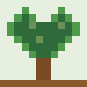
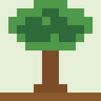

พรรณไม้ไทย
พรรณไม้ไทย
Economic Crops
มันสำปะหลัง – Cassava
Manihot esculenta
A starchy root crop processed into chips and starch.
View details
Manihot esculenta
A starchy root crop processed into chips and starch.
View details
Lepironia articulata
Wetland reed woven into mats and bags.
View details
Hevea brasiliensis
A tree tapped for latex used in many products.
View details